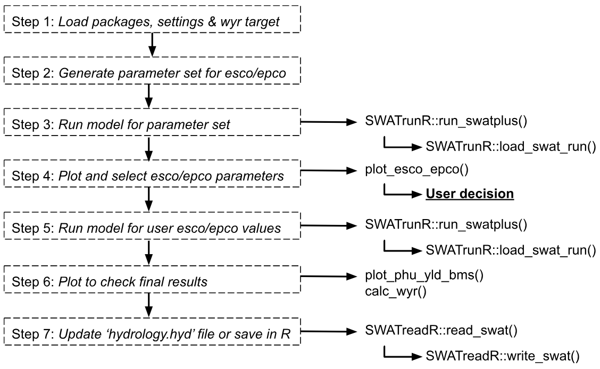
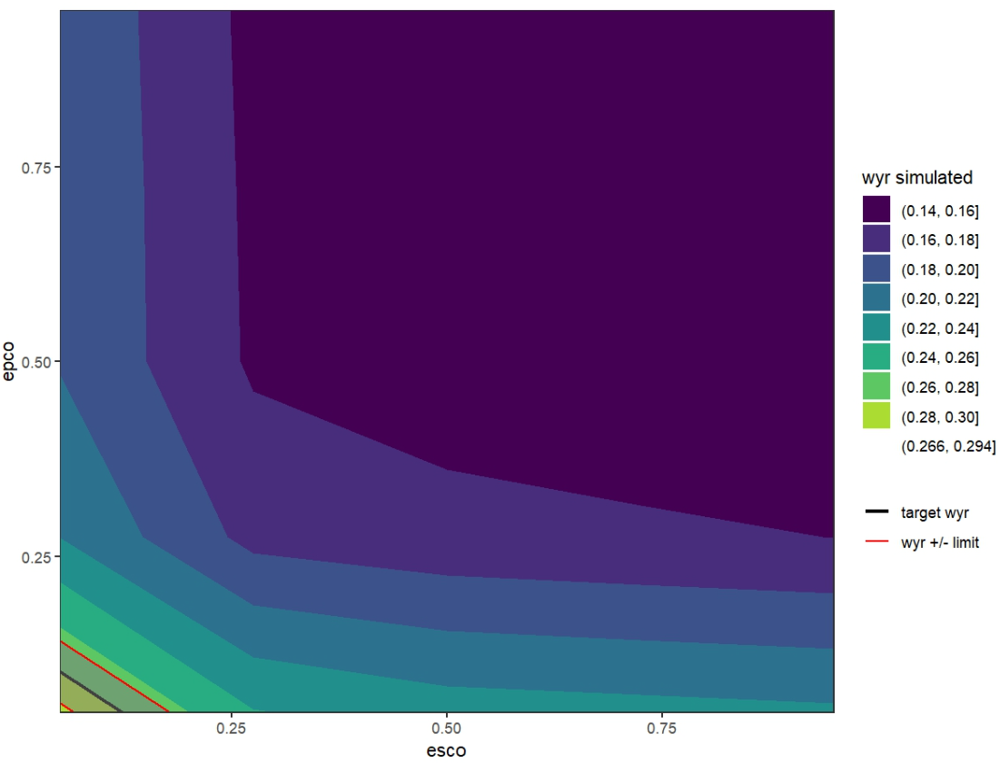
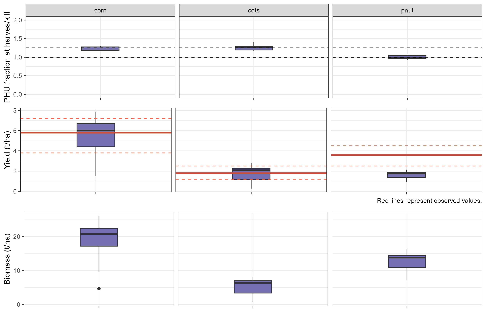

Water Yield
Soft calibration workflow for water yield ratio in SWAT+ models
Source:vignettes/sc-wy.Rmd
sc-wy.RmdIntroduction
The SWATtunR package supports a flexible and systematic approach to soft calibration of hydrological parameters in SWAT+ for water yield calibration. This template script—intended to be adapted for each specific SWAT project—guides users through the calibration.
Workflow
The calibration process is structured into two main alternatives:
Alternative A: Calibrate the
escoparameter to achieve a target water yield ratio for the modeled catchment.esco(soil evaporation compensation factor) allows users to adjust the depth distribution used to meet soil evaporative demand, accounting for effects such as capillary action, crusting, and cracks. The default value is 0.5. This parameter is essential for accurately simulating the water balance in SWAT+ models, especially in regions where soil evaporation significantly influences the hydrological cycle.Alternative B: Jointly calibrate the
escoandepcoparameters.epco(plant uptake compensation factor) controls the extent to which deeper soil layers can compensate for water shortages in upper layers. Whenepcois close to 1.0, plants can draw more water from deeper layers; when near 0.0, uptake is restricted to the original root depth distribution, allowing minimal compensation.
If this alternative is chosen, epco should be kept as
close as possible to its default value of 0, as significant changes can
strongly affect crop yield simulations. If such changes occur, the crop
yield soft calibration step
should be revisited.
The following workflow script is generated by the soft calibration
function initialize_softcal(). It is located in
workflow/02_wateryield.R. This script serves as a
customizable template to guide users through the water yield soft
calibration process effectively.
An overview of all workflow steps is presented in the figure below. This page provides a detailed description of each step, including the necessary code snippets and explanations.

1. Load packages, settings & WYR target
The SWATtunR package is essential for soft calibration, as it provides the necessary functions for the calibration process. Additional packages are required for data manipulation, visualization, SWAT+ model runs, etc.
In this example, we present the Alternative B
workflow for water yield ratio soft calibration, as it represents the
slightly more complex option. Users can switch to Alternative
A by setting the alternative variable to
'A'. The model path should be updated to point to the
user’s specific SWAT+ project folder.
# Load required R packages ------------------------------------------------
library(SWATtunR)
library(SWATrunR)
library(tibble)
# Parameter definition ----------------------------------------------------
# Decide for calibration alternative 'A' (only esco) or 'B' (esco and epco).
alternative <- 'B'
# Path to the SWAT+ project folder.
model_path <- 'test/swatplus_rev60_demo'
# Set the number of cores for parallel model execution
n_cores <- Inf # Inf uses all cores. Set lower value if preferred.
# Set the number of steps in which the parameters esco/epco should be sampled
# A low number of e.g. 5 to 10 is absolutely sufficient.
n_step <- 5
# Set the target water yield ratio for the catchment (calculated from precipitation and flow data)
wyr_target <- 0.3
# Load and prepare data ---------------------------------------------------
# Load the yield observations
yield_obs_path <- './observation/crop_yields.csv'
yield_obs <- read.csv(yield_obs_path)
# Define the crops which should be used in the calibration.
# Default is all crops which are defined in yield_obs.
# Please define manually if only selected crops should be considered.
crop_names <- yield_obs$plant_name
# Optional reset of hydrology.hyd -----------------------------------------
# In the case the water yield ratio calibration workflow should be redone after
# the last step of this script was already executed and the hydrology.hyd was
# overwritten the hydrology.hyd should be reset to its initial condition. To
# perform the reset set reset <- TRUE
reset <- FALSE
if(reset & file.exists('./backup/hydrology.hyd')) {
file.copy('./backup/hydrology.hyd',
paste0(model_path, '/hydrology.hyd'),
overwrite = TRUE)
}2. Generate parameter set for esco/epco
In this step, we generate a parameter set for the esco
and epco parameters. If n_step is set to 5,
then 5 × 5 = 25 parameter combinations will be generated. The parameters
are sampled at equal intervals between 0.05 and 0.95. Other intervals
can be used as well.
# Alternative A: Calibrate esco -------------------------------------------
if(alternative == 'A') {
# Sample the paramter esco with the defined number of steps.
par_esco_epco <- tibble('esco.hru | change = absval' =
seq(0.05,0.95, length.out = n_step))
# Alternative B: Calibrate esco and epco ----------------------------------
} else if (alternative == 'B') {
# Define the esco and epco parameter ranges.
par_bnd <- tibble('esco.hru | change = absval' = seq(0.05, 0.95, length.out = n_step),
'epco.hru | change = absval' = seq(0.05, 0.95, length.out = n_step))
# Sample the esco epco combinations with LHS sampling.
par_esco_epco <- expand.grid(par_bnd)
}3. Run model for parameter set
In this step run_swatplus function from
SWATrunR package executes the model simulations for
each combination of prepared parameters. All simulation results are
saved in the ./simulation folder. Each set of results is
time-stamped, so if the process is repeated, the most recent simulations
are always used in the analysis.
# Run the SWAT+ model for each parameter combination
run_swatplus(project_path = model_path,
output = list(precip = define_output(file = 'basin_wb_aa',
variable = 'precip',
unit = 1),
surq_cha = define_output(file = 'basin_wb_aa',
variable = 'surq_cha',
unit = 1),
surq_res = define_output(file = 'basin_wb_aa',
variable = 'surq_res',
unit = 1),
latq_cha = define_output(file = 'basin_wb_aa',
variable = 'latq_cha',
unit = 1),
latq_res = define_output(file = 'basin_wb_aa',
variable = 'latq_res',
unit = 1),
qtile = define_output(file = 'basin_wb_aa',
variable = 'qtile',
unit = 1),
flo = define_output(file = 'basin_aqu_aa',
variable = 'flo',
unit = 1)
),
parameter = par_esco_epco,
start_date = NULL, # Change if necessary.
end_date = NULL, # Change if necessary.
add_date = FALSE,
years_skip = NULL, # Change if necessary.
n_thread = n_cores,
save_path = './simulation',
save_file = add_timestamp('sim_wbal'),
return_output = FALSE,
time_out = 3600 # seconds, change if run-time differs
)4. Plot and select esco/epco parameters
The load_swat_run function from the
SWATrunR package is used to load the most recent
simulation results from the simulation folder. The
plot_esco_epco() function is then used to visualize the
results.
Based on the simulated water balance components for the different
esco and epco values, a simulated water yield
ratio is calculated and plotted against the parameter values. The plot
also includes the target water yield ratio to help identify a suitable
range or value for esco and epco.
# Load the most recent simulation results of the water balance components.
wbal_sims <- list.files('./simulation/', pattern = '[0-9]{12}_sim_wbal')
wbal_path <- paste0('./simulation/', wbal_sims[length(wbal_sims)])
wbal_sim <- load_swat_run(wbal_path, add_date = FALSE)
# Plot the water balance components and the water yield ratio
plot_esco_epco(wbal_sim, 0.28, rel_wyr_limit = 0.05)
The esco/epco plot displays recommended
parameter values that meet the target water yield ratio. There are two
options for defining esco and epco for further
use in the model:
Option 1: Set fixed values in the hydrology.hyd
file If specific values for esco and/or
epco are selected, they can be written directly into the
hydrology.hyd file, replacing the initial values. These
fixed values can either serve as a starting point for further
calibration or be maintained as constant values during later calibration
steps.
Option 2: Use parameter ranges for further calibration Alternatively, parameter ranges can be selected based on the plot and used in additional simulations with SWATrunR, for example, during more detailed (hard) calibration.
Before choosing one of these options, it is recommended to run an
additional simulation using a selected
esco/epco parameter set. This helps evaluate
the simulated water yield ratio and crop yields, especially since
parameters like epco can influence simulated plant
growth.
In this example we will use the first option and set fixed values for
esco and epco in the
hydrology.hyd file. Following values are selected based on
the plot above.
# Set fixed values for esco and epco in the hydrology.hyd file. Alternative 'B' is used here.
if (alternative == 'A') {
par_check <- tibble('esco.hru | change = absval' = 0.5) # Adjust accordingly
} else if (alternative == 'B') {
par_check <- tibble('esco.hru | change = absval' = 0.02, # Adjust accordingly
'epco.hru | change = absval' = 0.12) # Adjust accordingly
}5. Run model for user esco/epco values
In this step, the model is run again using the selected
esco and epco values. The results are saved in
a new folder.
# Rerun model for crop yields results
run_swatplus(project_path = model_path,
output = list(precip = define_output(file = 'basin_wb_aa',
variable = 'precip',
unit = 1),
surq_cha = define_output(file = 'basin_wb_aa',
variable = 'surq_cha',
unit = 1),
surq_res = define_output(file = 'basin_wb_aa',
variable = 'surq_res',
unit = 1),
latq_cha = define_output(file = 'basin_wb_aa',
variable = 'latq_cha',
unit = 1),
latq_res = define_output(file = 'basin_wb_aa',
variable = 'latq_res',
unit = 1),
qtile = define_output(file = 'basin_wb_aa',
variable = 'qtile',
unit = 1),
flo = define_output(file = 'basin_aqu_aa',
variable = 'flo',
unit = 1),
yld = define_output(file = 'mgtout',
variable = 'yld',
label = crop_names),
bms = define_output(file = 'mgtout',
variable = 'bioms',
label = crop_names),
phu = define_output(file = 'mgtout',
variable = 'phu',
label = crop_names)
),
parameter = par_check,
start_date = NULL, # Change if necessary.
end_date = NULL, # Change if necessary.
# add_date = FALSE,
years_skip = NULL, # Change if necessary.
n_thread = n_cores,
save_path = './simulation',
save_file = add_timestamp('sim_check02'),
return_output = FALSE,
time_out = 3600 # seconds, change if run-time differs
)6. Plot to check final results
Before finalizing the model, it is important to recheck the crop
simulation results with the selected esco and
epco values. The plot_phu_yld_bms() function
can be used again to visualize crop yields and biomass, as well as the
Potential Heat Units at the harvest for each crop.
# Load the most recent simulation results.
check_sims <- list.files('./simulation/', pattern = '[0-9]{12}_sim_check02')
check_path <- paste0('./simulation/', check_sims[length(check_sims)])
check_sim <- load_swat_run(check_path, add_date = FALSE)
# Plot PHU, crop yields and biomass for final simulation run.
plot_phu_yld_bms(check_sim, yield_obs, 0.3)
If everything looks good, the final water yield ratio from the model
results should also be checked using the calc_wyr()
function.
# Check the simulated water yield ratio with reference to the target wyr.
calc_wyr(check_sim)7. Update ‘hydrology.hyd’ file or save in R
The last step is to save the selected esco and
epco values either in the hydrology.hyd file
or save them in R for future use. This ensures that the model can be run
with these parameters in subsequent simulations.
# Option 1: Re-writing SWAT+ parameter file hydrology.hyd
# If SWATreadR is not installed please install from:
# devtools::install_github('chrisschuerz/SWATreadR')
library(SWATreadR)
if(!file.exists('./backup/hydrology.hyd')) {
file.copy(paste0(model_path, '/hydrology.hyd'), './backup/hydrology.hyd')
}
hydrology_hyd <- read_swat(paste0(model_path, '/hydrology.hyd'))
hydrology_hyd$esco <- 0.02 # set value
hydrology_hyd$epco <- 0.12 # set value if epco is considered
write_swat(hydrology_hyd, paste0(model_path, '/hydrology.hyd'), overwrite = TRUE)
# Option 2: Setting parameter values for SWATrunR runs
# To further use esco and epco ranges in e.g. the hard calibration workflow
# add esco and epco ranges in the parameter definition (by default they are
# included). To include their full ranges it may look like this.
# Please adjust the ranges based on the results above.
parameter_boundaries <- tibble(
'esco.hru | change = absval' = c(0.05, 1),
'epco.hru | change = absval' = c(0.05, 1),
)Next steps
If you are satisfied with the water yield ratio and crop yield results, you can proceed to the next step — the hard calibration workflow here.
However, it may be wise to first examine the model setup using the SWAT+ model setup verification workflow here, as it can identify potential issues and save considerable time during hard calibration.
If, on the other hand, the crop yields are not satisfactory in step 6, you should revisit the crop soft calibration workflow here before moving on to hard calibration.